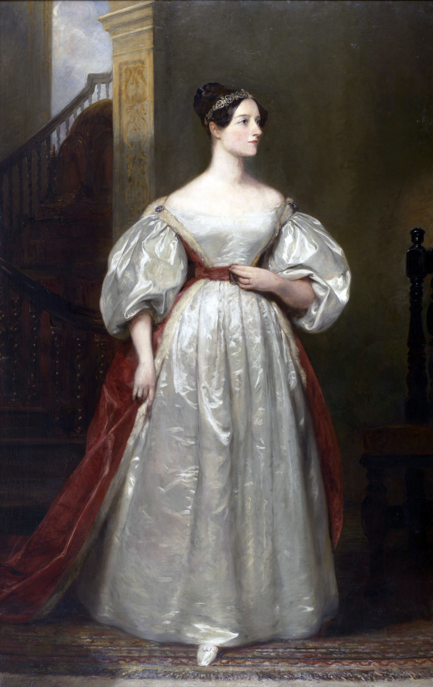

Attention Companies: We are currently looking for several corporate sponsors for this event. If you are interested in supporting women in computing at the University of Michigan in this way, please get in touch with Rada Mihalcea (mihalcea@umich.edu).
Ada Lovelace Opera:A Celebration of Women in Computing
When: November 16, 2017 at 7pm
Where: Stamps Auditorium, University of Michigan

Join us in celebrating the accomplishments of Ada Lovelace, widely regarded as the first programmer, and the many women who have followed in her footsteps and greatly influenced the field of computer science.
This event, a collaboration between UM's Computer Science and Engineering Department and School of Music, Theater, and Dance, will be an evening of opera and a celebration of the achievements of women in computer science. It will include a performance of the opera Enchantress, as well as a showcase of current computer science research from women at the University of Michigan.
The music for Enchantress is written by Kamala Sankaram, the libretto is written by Ron Handel, and the opera will be directed by Colter Schoenfish. This event is organized by Girls Encoded.